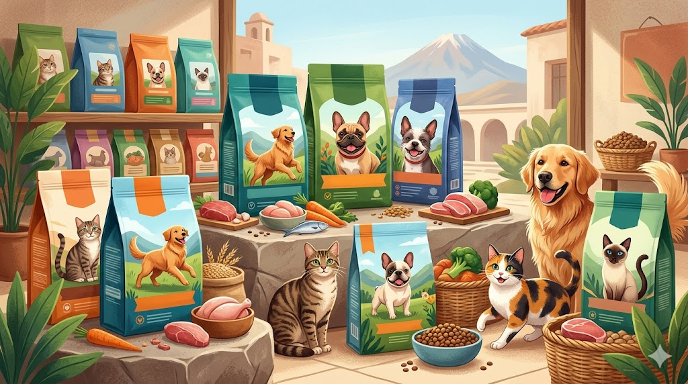
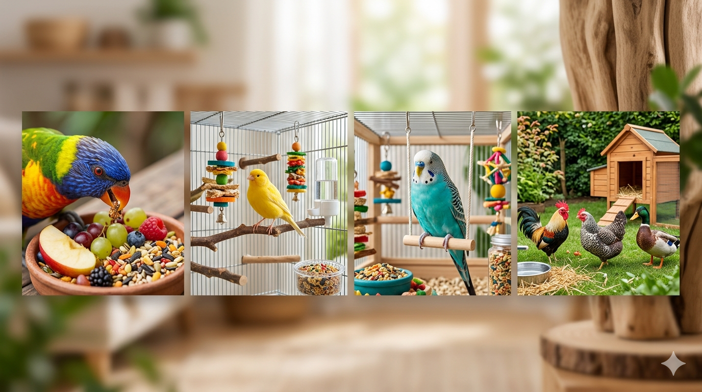
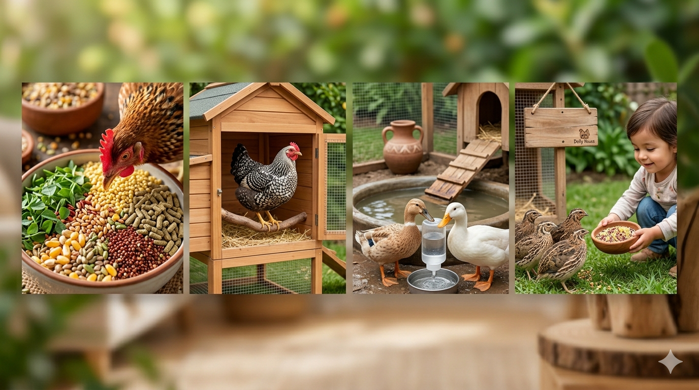

🛒 Carrito

Sabemos que elegir la comida ideal para tu mascota puede ser abrumador con tantas opciones en los supermercados y veterinarias de nuestro país. Marcas como Hill's y Royal Canin suelen ser las más buscadas para el cuidado de la salud. Cuidar su alimentación es la mejor manera de asegurar que te acompañe sano y fuerte por muchos años.
En Dolly House Arequipa, evaluamos constantemente las marcas líderes en Perú. Analizamos su calidad nutricional, los ingredientes reales y los resultados en la salud de nuestras mascotas para ayudarte a tomar la mejor decisión.
Una alimentación adecuada previene enfermedades, mejora el pelaje, fortalece el sistema inmune y alarga la vida de tu mascota. No todos los alimentos son iguales: los alimentos super premium usan ingredientes de mayor calidad y sin rellenos artificiales.
Para perros, gatos, aves y animales pequeños existen fórmulas específicas según la edad, el tamaño y las necesidades de cada animal. Lo más importante es consultar con un veterinario de confianza antes de cambiar la dieta de tu mascota.
| Marca | Beneficio Principal | Nivel de Inversión | Recomendación Veterinaria |
|---|---|---|---|
| Hill's Science Diet | Cuidado preventivo y longevidad | Alto | ⭐⭐⭐⭐⭐ |
| Royal Canin | Adaptación al tipo de raza | Alto | ⭐⭐⭐⭐ |
| Pro Plan | Mantenimiento y defensas | Medio-Alto | ⭐⭐⭐⭐ |
| Canbo | Calidad nacional accesible | Medio | ⭐⭐⭐ |
| Mimaskot | Opción económica y disponible | Bajo | ⭐⭐ |
Los alimentos super premium contienen proteínas de alta calidad como primer ingrediente, sin colorantes ni conservantes artificiales. Aunque su precio es mayor, a largo plazo reducen las visitas al veterinario y mejoran notablemente la calidad de vida de tu mascota.
En nuestra tienda encontrarás una amplia variedad de marcas premium para perros, gatos, aves, animales pequeños y aves de corral. Visítanos y nuestros asesores te guiarán en la mejor elección.

Las aves son mascotas fascinantes que requieren atención especial. Desde la alimentación hasta el tamaño de su jaula, cada detalle importa para garantizar su bienestar y felicidad.
En Dolly House contamos con todo lo necesario para el cuidado de loros, canarios, periquitos y aves de corral. Nuestros productos están seleccionados por especialistas para garantizar la mejor calidad.
| Ave | Dificultad de Cuidado | Esperanza de Vida | Nivel de Ruido |
|---|---|---|---|
| Loro | Alta | 20 – 80 años | Alto |
| Canario | Baja | 10 – 15 años | Medio |
| Periquito | Baja | 5 – 10 años | Bajo |
| Gallina | Media | 5 – 10 años | Medio |

Criar aves de corral en casa se ha vuelto cada vez más popular en zonas urbanas y periurbanas de Arequipa. Gallinas, patos y codornices no solo son una fuente de alimento, sino también mascotas que generan un vínculo especial con la familia.
Lo más importante es garantizarles un espacio limpio, ventilado y seguro. El alimento debe ser específico para cada especie y complementado con agua fresca todos los días. En Dolly House tenemos todo lo que necesitas: alimento balanceado, comederos, bebederos y accesorios para su cuidado.
Cada ave tiene requerimientos distintos. Las gallinas ponedoras necesitan calcio adicional para producir huevos de calidad. Los patos requieren acceso al agua para nadar y mantenerse saludables. Las codornices son ideales para espacios pequeños y producen huevos nutritivos en poco tiempo.
| Ave | Producción | Espacio Requerido | Dificultad de Cuidado |
|---|---|---|---|
| Gallina Ponedora | Huevos diarios | Medio | Baja |
| Codorniz | Huevos pequeños | Pequeño | Muy baja |
| Pato | Huevos y carne | Grande | Media |
| Pavo | Carne | Grande | Media |
En Dolly House Arequipa encontrarás alimento balanceado para todas estas especies, jaulas, comederos y asesoría personalizada. ¡Visítanos y empieza tu proyecto de aves de corral en casa!